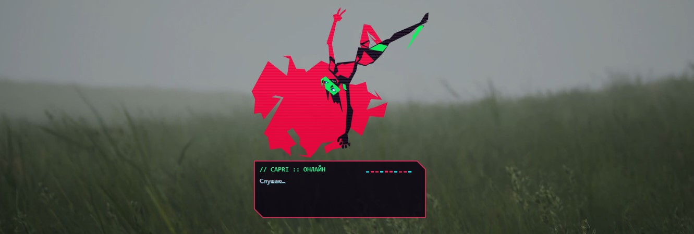
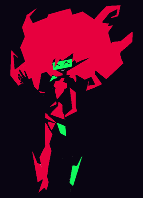

Что она умеет
Скажи «Капри», затем команду. Она слушает через микрофон, понимает русский и отвечает голосом.
- Интернет
Открывает сайты, ищет в Google, картинки и информацию, пересказывает Википедию.
Капри, открой ютуб
- YouTube
Сразу включает первое видео по твоему запросу или ищет прямо на YouTube.
- Музыка и видео
Пауза, следующий трек, «что играет», перемотка на нужную минуту.
Капри, поставь на 3:14
- Telegram
Находит чат, печатает сообщение и отправляет.
Капри, открой телеграм, чат папа, напиши привет
- Программы и окна
Открывает и закрывает программы, завершает процессы, сворачивает окна, прокручивает страницы.
- Клавиши
Нажимает сочетания клавиш по названию.
Капри, нажми вин таб
- Файлы
Открывает папки и диски, создаёт папки, текстовые файлы, документы и таблицы.
- Компьютер
Громкость, яркость, диагностика ПК, скриншот, блокировка.
Капри, что грузит компьютер
- Разговор
Бесплатная локальная нейросеть со своим характером. Работает без интернета и без ключей.
- Чат на экране
Кнопка в углу экрана открывает окно чата: можно писать вместо голоса. Включается в настройках.
- Сама по себе
Меняет позы, гуляет по экрану, скачет молнией, пока отвечает, иногда появляется сама. Может устроить безобидный прикол, например оставить записку в Блокноте (по умолчанию выключено).
Все команды работают сразу после установки. Нейросеть нужна только для болтовни.
Проект сделан с помощью ИИ: код, оформление и документация написаны вместе с нейросетью. Характер Капри собран из разных источников, поэтому в разговоре она иногда бывает кринжовой.
Установка
Четыре шага. Всё остальное сделает установщик.
-
Поставь Python 3.13
Скачай установщик для Windows (64-bit). Подойдут и версии 3.11–3.14.
При установке обязательно поставь галочку «Add python.exe to PATH». Если Python уже стоит, пропусти этот шаг.
-
Скачай установщик
Нажми кнопку. Браузер сохранит файл Install-Capri.bat.
Файл скачан. Он лежит в папке «Загрузки».
-
Запусти Install-Capri.bat
Открой файл двойным щелчком. Он скачает Капри в папку
C:\Capri, поставит библиотеки, распакует офлайн-модель распознавания речи и создаст ярлык на рабочем столе. Дождись слов «Done».Если Windows покажет «Windows защитила ваш компьютер», нажми «Подробнее», затем «Выполнить в любом случае». Так Windows реагирует на любые .bat-файлы из интернета. Код установщика можно прочитать ниже.
-
Скажи «Капри, открой ютуб»
Капри появится и поздоровается, а в трее у часов появится её значок. Если открылся YouTube, всё работает.
Windows может спросить доступ к микрофону: разреши. Нужный микрофон выбирается в меню трея, «Настройки…», «Звук».
Что делает установщик
- Создаёт папку
C:\Capri(если нельзя, тоCapriв твоей пользовательской папке). - Скачивает архив проекта с GitHub и распаковывает его во временную папку.
- Копирует файлы в папку Капри. При обновлении твои настройки (
config.json) и модели не затрагиваются. - Запускает
setup.bat: ставит библиотеки изrequirements.txtи распаковывает модель распознавания речи. - Создаёт ярлык «Capri» на рабочем столе и предлагает сразу запустить.
Показать код установщика
Установить вручную, без установщика
- Поставь Python 3.13 (шаг 1 выше).
- Скачай ZIP и распакуй в удобную папку, например
C:\Capri. Запускать из архива нельзя. - Запусти
setup.batи дождись надписи «Готово». - Запусти
run.bat.
Лучше, чтобы в пути к папке не было русских букв: так надёжнее работает распознавание речи.
Как научить Капри разговаривать
Для болтовни нужна Ollama, бесплатная программа, которая запускает нейросеть прямо на компьютере. Разговоры никуда не отправляются.
- Запусти
setup_ai.batв папке Капри. Он установит Ollama, подберёт модель под твою видеокарту и память и скачает её. - Перезапусти Капри: значок в трее, «Выход», затем снова
run.bat.
Если модель не скачивается, включи VPN и запусти setup_ai.bat ещё раз.
Как она выглядит
Живёт поверх окон и появляется с глитч-вспышками.


Она меняет позы, гуляет по панели задач и скачет красной молнией, пока отвечает.